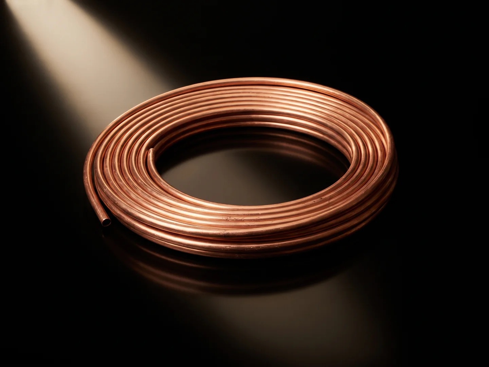
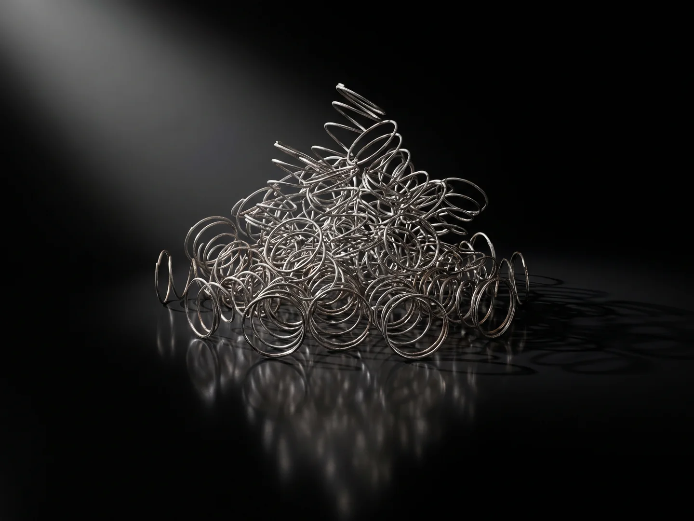

Metals
Ferrous and non-ferrous, from one facility
Two product lines. Spring steel and ferrous scrap off the mattress line and the sorting floor; copper, aluminium, brass and stainless recovered from cable, appliances and commercial clearances. Every stream weighed, processed and reported the same way.

Recycled steel
Processed high-tensile spring steel, ~99% ferrous, loose or baled, 130–250 t a month, plus sorted ferrous scrap. Specification, forms of supply and what we don't claim.

Non-ferrous
Copper and cable, aluminium, brass and stainless: segregated by type, accumulated to lots, sold by weight. Cable granulated mechanically, never burnt.
Five metals
One line. Five products.
Each stream is weighed, processed and dispatched on its own record. Pick a metal.


Stream by stream
What comes in, what it becomes
The same eight streams Metal Recycling Connect records against every load.
| Mattress spring steel | Shredded; steel pulled by magnets, cleaned by vibration, suction and electrostatic separation → processed spring steel, loose or baled |
|---|---|
| Ferrous scrap | Sorted, sized where needed, contamination removed → processed ferrous scrap, baled |
| Copper | Sorted by grade, accumulated to lots → sorted copper |
| Cable | Granulated mechanically, copper separated from insulation → copper granules |
| Aluminium | Sorted by alloy family, baled → sorted aluminium |
| Brass | Sorted from plumbing, fittings and hardware → sorted brass |
| Stainless steel | Kept separate from the ferrous line, sorted → sorted stainless |
| Mixed metals | Hand and magnet sorted into steel, copper and aluminium → sorted metals by type |
Steel
Spring steel and ferrous scrap. The specification, forms of supply and what we do not claim.
Steel →Copper & cable
Sorted copper by grade; cable granulated, never burnt. Grades and lots.
Copper →Aluminium
Extrusion, sheet and cast, sorted by family and baled.
Aluminium →Stainless & brass
Kept off the ferrous line, sorted and accumulated to lots.
Stainless & brass →
Why one facility matters
Same weighbridge, same line, same record
Because every stream is weighed in and out at the one site, The Metal Recycling Company can say exactly what a load was, what it became and where it went, for the partner who sent it and the buyer who received it. That is not usual in scrap. It is the point of The Metal Recycling Company.
Buying or supplying?
Tell us which metals, where you are and the volumes involved.